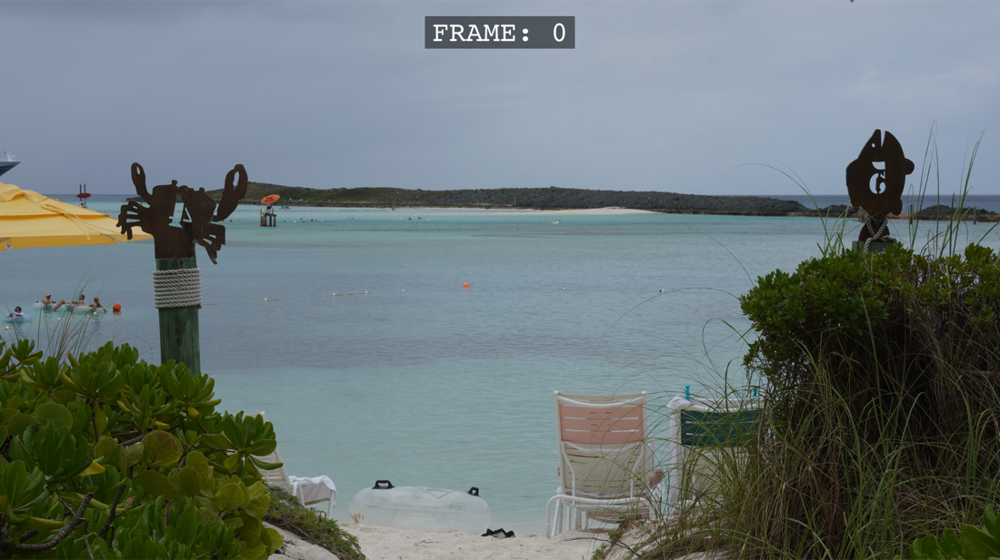

Crops & framing
SISR never stretches your photo to fit a random shape. It chooses a window with the right proportions, then scales that window to the output size. The examples below use a common 3:2 camera image (many DSLRs and mirrorless cameras) so you can match what you see on screen to the Position menu for HD and 4K.
Starting point: a 3:2 photograph
A standard 3:2 picture is one and a half times as wide as it is tall (for example 6000 × 4000 pixels). That shape is a bit taller than a widescreen 16:9 frame. So when you pick HD or UHD, SISR keeps the full width of the photo and trims from the top, the bottom, or both until the remainder is 16:9. The Position (HD / UHD) menu chooses which vertical slice you keep.
In the diagrams, the gray box is the whole photo (scaled to 300×200 units to keep the math simple). The green outline is the 16:9 area that becomes your 1080p or 4K video. Anything outside the green box is not used.
From 3:2 to 16:9 — the Position menu (and
--hd-crop / --uhd-crop on the command line)
The band’s height is the image width multiplied by 9⁄16. On a 3000 × 2000 file, that height is about 1688 px, leaving roughly 312 px of extra picture above or below — which is exactly what you slide with Keep top, Center, or Keep bottom.
GUI: Position → Keep top
CLI:
--hd-crop keep_top or --uhd-crop keep_top
GUI: Position → Center
CLI:
--hd-crop center or --uhd-crop center
GUI: Position → Keep bottom
CLI:
--hd-crop keep_bottom or --uhd-crop keep_bottom
From a real export (not just a diagram)
The sketches above are simplified. This still is from an actual render using the UHD crop and Frame overlay — a 16:9 result at 4K resolution with a small frame counter on the image.

Same 3:2 image → Instagram (9:16)
A 3:2 landscape shot is wider than a tall phone-style 9:16 frame. To fit, SISR keeps the full height of the photo and trims equal amounts from the left and right, leaving a vertical strip in the middle. That strip is then scaled to 1080 × 1920. The Position option is not shown for Instagram in the app — framing is always this centered strip.
3:2 → 9:16 — vertical strip (sides discarded)
Strip width = height × (9⁄16). For H = 4000 px:
4000 × 9⁄16 = 2250 px wide; on a 6000 px-wide file, equal side
crops of 1875 px each. Preset: Crop → Instagram; CLI:
--instagram-crop.
Other camera shapes
4:3 photos (many phones and Micro Four Thirds cameras) are even taller relative to 16:9 than 3:2. You still use Keep top, Center, and Keep bottom for HD and 4K — only more of the top and bottom is left out than in the diagrams here.
A very wide panorama (wider than 16:9) is trimmed on the sides for HD and 4K instead of the top and bottom. Other aspect ratios use the same controls; only which edges get cropped changes.
Output resolution after cropping
| Preset | Final size | Aspect |
|---|---|---|
| 1080 × 1920 | 9 : 16 | |
| HD | 1920 × 1080 | 16 : 9 |
| UHD | 3840 × 2160 | 16 : 9 |
At a glance (typical 3:2 photo)
| Output | What happens | App control |
|---|---|---|
| HD / UHD | Full width, horizontal 16:9 band; choose vertical placement. | Position: Center, Keep top, Keep bottom |
| Full height, narrow 9:16 strip; sides discarded, centered. | Crop → Instagram only (no Position in GUI) | |
| None + max size | No aspect-ratio crop; proportional scale to fit max width/height. | Max width / height |